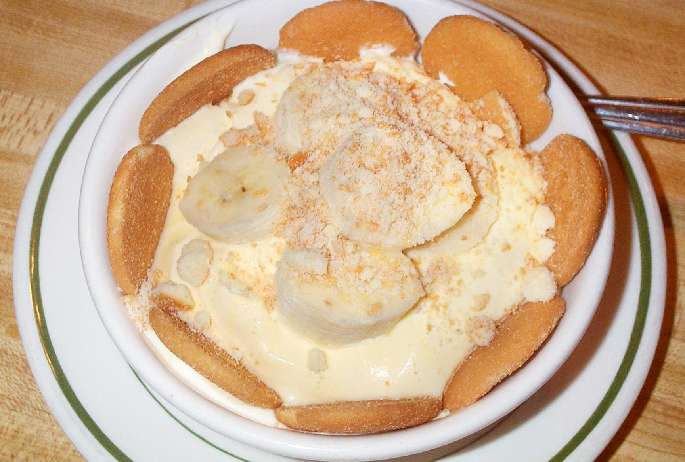

Return to Home
Banana Pudding

Learn how to prepare your new favorite dessert dish!
As an avid fan of bananas, this banana pudding has been a favorite from childhood through adulthood.
It's the perfect homemade dessert for anyone to learn and share with their loved ones.
Ingredients
- 2/3 cup white sugar
- 1/3 cup all-purpose flour
- 3 large eggs, beaten
- 2 cups milk
- 2 tablespoons butter, softened
- 1/2 teaspoon vanilla extract
- 2 bananas, peeled and sliced
- 1/2 (12 ounce) package vanilla wafer cookies
Steps
- Combine sugar and flour together in medium saucepan. Add eggs and milk and continue to stir over low heat.
- When the mixture has thickened, remove from heat and continue to stir as it cools slightly. Stir in butter and vanilla extract until smooth.
- Pour mixture into serving dish and layer with banana slices and vanilla wafers.
- Chill at least 1 hour in the refrigerator before serving.